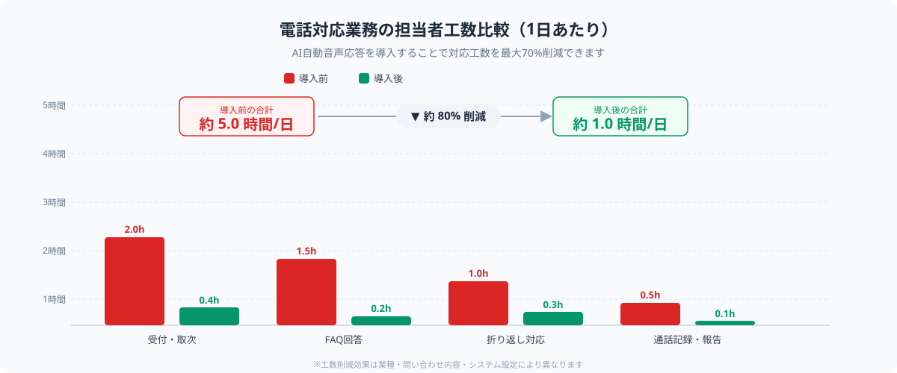
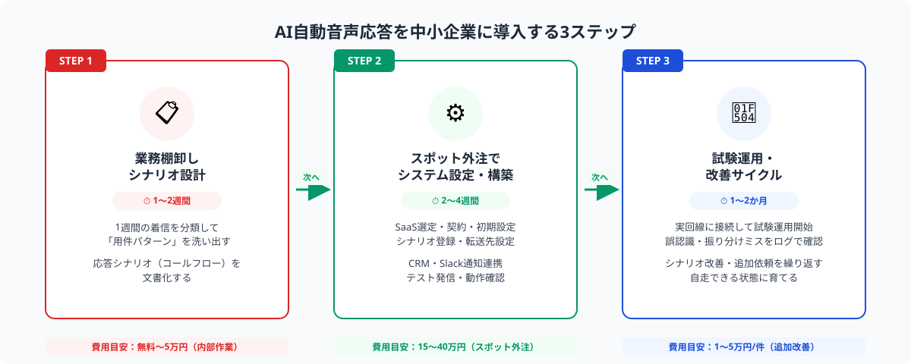

中小企業の電話対応で起きている3つの課題
従業員20〜100名規模の中小企業では、代表電話の対応が特定の担当者（受付・総務・営業事務）に集中しやすく、日常業務の大きなボトルネックになっています。
課題① 電話対応に時間が取られ本来業務が止まる
受付担当者が1日に受ける電話の平均は20〜50件とも言われます。「担当者に取り次ぐ」「折り返す」「在席確認する」といった対応ステップは1件あたり3〜10分を消費し、集中業務の妨げになります。特に繁忙期や少人数体制の日は、着信が重なって顧客を長時間待たせてしまうケースも起きます。
課題② 営業時間外の問い合わせを取りこぼす
夕方以降や休日の問い合わせは留守番電話になるか、そもそも電話をかけてもらえないまま競合に問い合わせが流れるケースが多くあります。特にBtoC商材や緊急性のある依頼を受ける業態では、この機会損失は無視できません。
課題③ 問い合わせ内容の記録・集計ができていない
電話対応を紙のメモや担当者の記憶だけで処理していると、「よく来る問い合わせパターン」や「クレームの傾向」が見えません。FAQ整備やサービス改善のためのデータが蓄積されず、毎回同じ質問に同じ時間をかけて答え続ける状況が続きます。
これらを一括して解決するのがAI自動音声応答（AI-IVR・AIボイスボット）の導入です。
AI自動音声応答でできること

AI自動音声応答システムは、従来の押しボタン式IVR（Interactive Voice Response）にAIを組み合わせたものです。音声認識と自然言語処理によって、発信者の話す内容を理解して適切な応答や振り分けが行えます。主な機能は4つです。
① 24時間自動受付・初期応対
電話がかかってくると、AIが「はい、○○株式会社でございます。ご用件をどうぞ」のように自然な音声で応答します。営業時間外でも同様に自動対応し、「後ほど担当者からご連絡します」と案内してメッセージを受け付けることができます。これにより、休日・夜間の問い合わせ取りこぼしをなくせます。
② よくある質問への自動回答
「営業時間を教えてください」「○○の料金はいくらですか」「最寄り駅はどこですか」といった定型質問に対して、AIが音声で即答します。全問い合わせの30〜50%が定型質問であるケースが多く、これを自動化するだけで担当者の対応件数を大幅に削減できます。
③ 担当部署・担当者への自動振り分け
「ご用件が営業に関することであれば1を、サポートに関することであれば2をお話しください」といった振り分けだけでなく、AIが音声内容を解析して「この問い合わせは技術サポート部門に転送」と自動判断する高度な振り分けも可能です。担当者への転送ミスや取り次ぎの往復が減り、顧客の待ち時間が短縮されます。
④ 問い合わせ内容のテキスト化・記録
通話内容を音声認識でテキスト化し、顧客の電話番号・時刻・問い合わせ内容をクラウドに自動記録します。担当者は折り返し前にテキストを確認でき、準備した上で電話できます。蓄積されたデータはFAQ改善やクレーム分析にも活用できます。
AI自動音声応答の導入は「SaaS選定・初期設定・シナリオ作成・CRMとの連携」という技術タスクが明確で、スポット外注との相性が抜群です。「専属ITベンダーを新たに抱える」必要はなく、初期設定・カスタマイズ部分だけを単発で依頼できます。ANKENのようなスポット外注プラットフォームであれば、クラウド電話・CRM連携の経験を持つエンジニアを探して短期間で依頼できます。
3ステップで導入する方法

STEP 1：電話業務の棚卸しとシナリオ設計（1〜2週間）
最初にやるべきことは、現状の電話対応を「見える化」することです。1週間分の着信を分類し、「どんな用件が何件来るか」を記録します。多くの場合、問い合わせは次の5〜10パターンに集約されます。
・営業時間・所在地に関する質問
・料金・見積もりの問い合わせ
・既存顧客からのサポート依頼
・新規取引の打診・資料請求
・採用・出前営業の電話
この分類をもとに「応答シナリオ（コールフロー）」を設計します。どの問い合わせをAIが自動回答し、どの問い合わせを担当者に転送するか、転送先はどの部署・内線番号か、を文書化します。このシナリオ設計がシステム設定の核になるため、担当者が実際の電話対応メモを参照しながら丁寧に作ることが成功の鍵です。
STEP 2：スポット外注でシステム設定・構築（2〜4週間）
STEP1で作成したシナリオをもとに、AIボイスボットの設定・カスタマイズをスポット外注で依頼します。代表的なSaaSとしてはMojimo（モジモ）、AIコールセンター、COTOHA Call Center（NTT Com）、CallConnect、カイクラなどがあります。
スポット外注での依頼内容は主に以下です。
・SaaSの契約・初期設定（電話番号の取得・転送先の設定）
・音声応答スクリプト（シナリオ）のシステムへの登録
・CRM・スプレッドシートへの通話記録の自動連携
・社内Slack・Chatworkへの通知設定
・テスト発信と動作確認
依頼時のポイントは、STEP1で作成したコールフロー文書とともに「現在の電話番号（代表番号）をそのまま使いたい」か「新番号に変更してもよいか」を明確にすることです。既存番号を活かしたい場合は電話番号ポータビリティや着信転送の設定が追加で必要になります。費用目安は設定・カスタマイズ込みで15〜30万円、CRM連携を追加する場合は+5〜10万円程度です。
STEP 3：試験運用・改善サイクル（導入後1〜2か月）
設定が完了したら、実際の電話回線に繋いで試験運用を開始します。最初の2〜4週間は担当者が通話記録とAIの応答ログを毎日確認し、「誤認識の多いフレーズ」「うまく振り分けられていない用件」を洗い出します。
改善はシナリオの修正（SaaS管理画面で自社で対応可能なケースが多い）または追加のスポット依頼（1〜5万円/件程度）で対応します。1〜2か月の改善サイクルを経ると、AI応答の精度は当初比で大幅に向上し、自走できる状態になります。
ANKENでは、クラウド電話・AI IVR・CRM連携の経験を持つエンジニアをスポット単位でご紹介しています。「どのSaaSが自社に合うか」「コールフロー設計をどう進めるか」という段階からご相談ください。初回相談は無料です。
👉 無料で相談する（AI電話対応の自動化をスポット外注で依頼する）SaaS選定・シナリオ設計・CRM連携の技術要件についても、ヒアリングした上でご提案します。
費用感と選定のポイント
AI自動音声応答の費用は「SaaS月額料金」と「初期設定・カスタマイズ費用（スポット外注）」の合計で考えます。
SaaS月額料金の目安
小規模向けのクラウド電話＋AI応答機能のSaaSは月額1〜3万円が一般的です。音声認識の処理件数やチャンネル数（同時通話可能数）によって変動します。年間契約で割引になるプランも多いため、初期は月払いで動作を確認してから切り替えるのが安全です。
初期設定・カスタマイズ（スポット外注）の費用目安
シナリオ登録・転送設定・通知連携のみであれば10〜20万円、CRM（SalesforceやHubSpot）との自動連携や複数拠点への展開を含む場合は30〜50万円程度が目安です。既存の電話番号やPBXとの接続が絡む場合は、追加で設定作業が発生することがあります。
SaaS選定のポイント
①日本語音声認識の精度（方言・業界用語への対応）、②既存電話番号をそのまま使えるか、③CRM・チャットツールとの連携のしやすさ、④管理画面でシナリオを自社で変更できるか（ノーコード対応）、⑤サポート対応の質（日本語サポートがあるか）の5点を比較して選定することをお勧めします。
ROIの考え方
受付担当者が電話対応に費やす時間が1日3時間であれば、月間60〜70時間の工数削減が見込めます。時給換算で月5〜7万円のコスト削減効果となり、SaaS月額（1〜3万円）を差し引いても十分なROIが得られます。さらに営業時間外の問い合わせ受付による売上機会の増加も加算すれば、導入から3〜6か月でコスト回収できるケースが多くあります。
よくある質問
- Q. AI自動音声応答はどんなシステムで実現できますか？
- A. クラウドIVR＋AI音声認識のSaaS（Mojimo・CallConnect・カイクラ等）を利用するのが一般的です。月額1〜3万円で始められ、スポット外注で初期設定・シナリオ登録を依頼できます。
- Q. 今使っている代表電話番号はそのまま使えますか？
- A. 多くのSaaSで着信転送またはナンバーポータビリティに対応しており、既存番号をそのまま維持できます。設定作業にはスポット外注が対応可能です。
- Q. 導入後のシナリオ変更は自分でできますか？
- A. 主要SaaSはノーコードの管理画面でシナリオ（コールフロー）を自社編集できます。複雑なCRM連携の変更はスポット外注での追加依頼（1〜5万円程度）で対応できます。
まとめ
中小企業の代表電話・問い合わせ対応は、AI自動音声応答システムを導入することで担当者の電話対応工数を最大70%削減し、24時間受付体制を実現できます。大規模なシステム開発は必要なく、SaaSの設定・シナリオ登録・連携設定をスポット外注で依頼することで、専任IT担当者がいない企業でも2〜4週間で稼働させられます。
成功のポイントは3つです。①まず1週間の着信ログから「どんな用件が何件来るか」を棚卸しして応答シナリオを文書化する、②SaaSの初期設定・カスタマイズをスポット外注に任せて短期間で稼働させる、③最初の1〜2か月は毎日ログを確認して誤認識・振り分けミスを改善する。電話対応の属人化から脱却し、担当者が本来業務に集中できる環境を整えましょう。